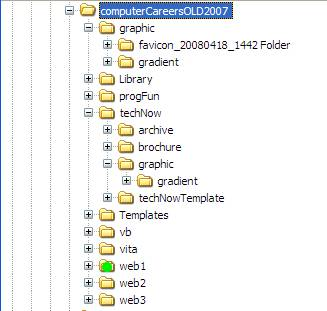

Notations - The Double Dot ..
You've seen how to traverse down into sub folders. But, how do you tell the system you want to go back up the tree?
You do that by using the double dot operator ".."
For example, let's say you have a web page inside of the web1 folder and you want to display a picture that is in the graphic subfolder of computerCareersOLD2007.( I've marked the web1 folder with a green dot. The graphic folder is right under the top computerCareersOLD2007 folder.

You could use the statement:
../graphic/myFile.jpg
This will tell the system to go up one level (or out to the next vertical line in the Explorer display and then into the graphic folder where myFile.jpg is located.